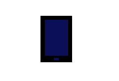

În ziua de astăzi, net-ul este platforma deschisă și universal accesibilă pentru inovație, creativitate și oportunități economice.
Unde pot folosi internetul?
Alege cele mai utilizate 4 device-uri pentru a accesa internetul:
Aproximativ oriunde cât timp am un device, de exemplu:
Acasă sau la muncă, desktop-ul este o alegere foarte bună pentru a naviga pentru internet.
Cu performanțe aproape identice cu ale desktop-ului, laptopul este portabil.
Tableta poate fi dusă aproape oriunde și asigură accesul rapid la informații.

Telefonul mobil (mai ales un smartphone) îl avem tot timpul cu noi.